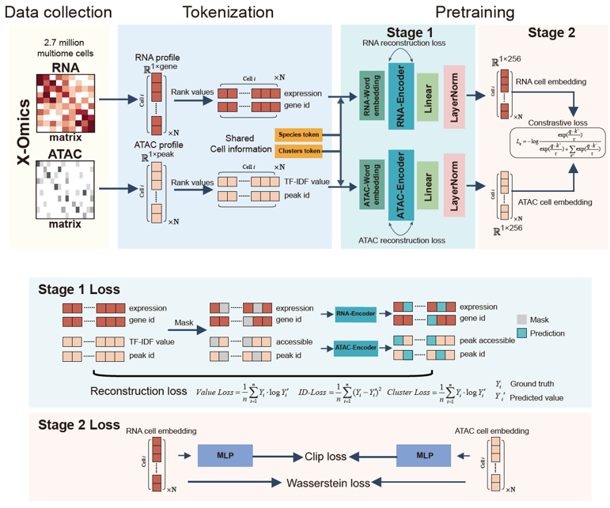
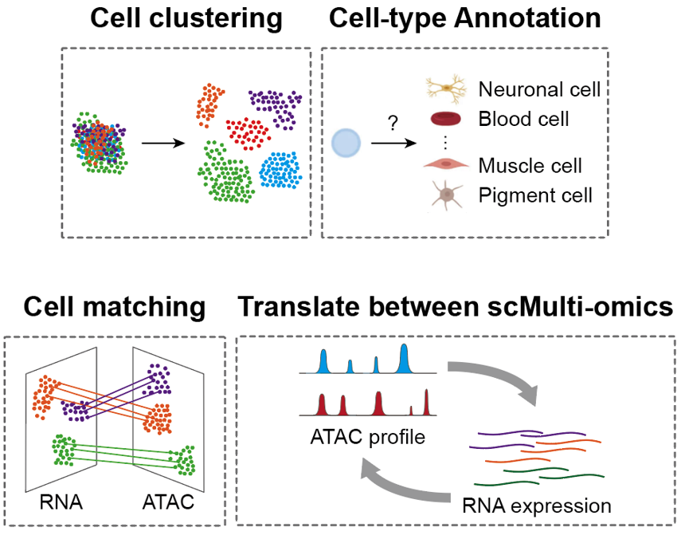

前期工作


之前的工作：SCARF
Single Cell ATAC-seq and RNA-seq Foundation model
这是我们之前的工作SCARF，全称是Single Cell ATAC-seq and RNA-seq Foundation model。在模型设计上，我们采用了多模态编码器，分别编码scRNA-seq和scATAC-seq数据，通过跨模态对比学习拉近同一细胞不同模态的表示，最终得到统一的联合嵌入空间用于下游分析。训练数据方面，我们使用了约四百万的10x Multiome细胞，涵盖RNA加ATAC模态，以及约一千三百万的paired数据和四百万的纯ATAC数据。SCARF的核心贡献在于首次在最大规模的单细胞多组学上验证了对比预训练的有效性，跨数据集零样本迁移的注释准确率超过了单组学大模型。